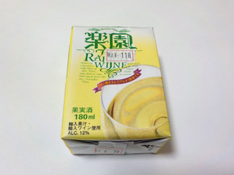
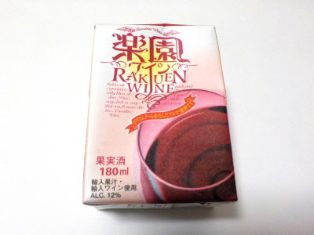
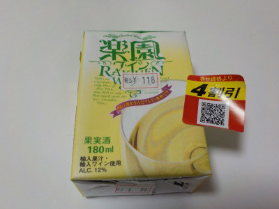
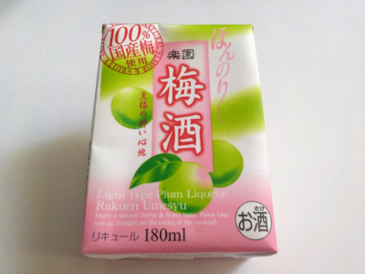

清州桜醸造の楽園ワインの白をまた買いました。
2022/12/27

すっぱくて美味しいワインをまた買って飲みました。
やっぱり美味しい。
愛知県清須市清洲1692番地
2022/12/27

すっぱくて美味しいワインをまた買って飲みました。
やっぱり美味しい。
2022/12/10

白ワインが美味しかったので赤も飲みました。
赤は色んな味があって複雑な感じがしました。濃い味でいいとは思うんですが、私は白のほうが好きかな。
2022/12/04

安かったのでストローで飲むワインを買ってみました。
酸っぱい白ワインです。
今まで私はフルーティーで甘い白ワインが好きだって思っていましたが、考えが変わりました。
酸味が強い白ワインは、よりブドウらしい味がして美味しいです。酸っぱいのがクセになる美味しさだと感じました。
通常価格でも買い求め易い値段なので、デイリーワインに丁度いいと思いました。
2022/10/07

安くて小さくて気軽に飲める梅酒です。他のメーカーもこうゆう商品を出して欲しいです。
私は毎日とか大量に飲まないので、大きい容器の梅酒は買わないです。これくらいが丁度いい。
甘さ控えめで飲みやすいです。アルコールがそこそこあるので、ゴクゴク飲まないでストローでちょっとづつがいいかなと思いました。